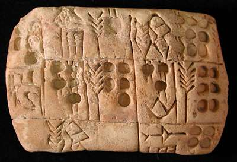

The Challenge -
Pictographic tablet

This tablet dates to around 3100 B.C. It is a record of the distribution of barley. Officials kept track of goods by drawing pictures of them in clay alongside signs representing amounts. Over time the people using these tablets realised that they could use the pictures to spell out words and started to write the Sumerian language.
To learn more about tablets like this visit the Writing Story.
|
|